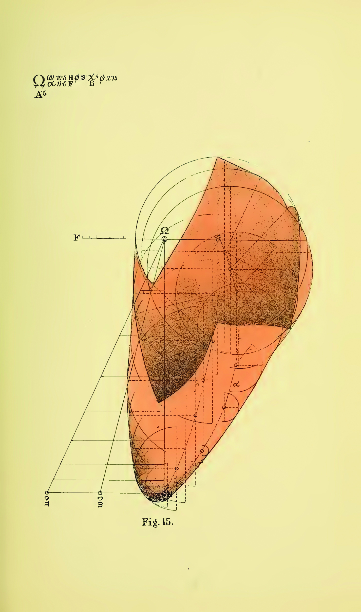
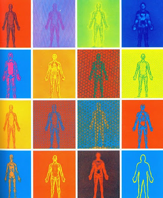
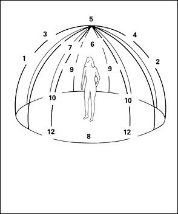

The diagram, upon first glance, is a rather dry concept to many. Simply put, it is a device through which seemingly technical or complex topics can be broken down and efficiently communicated to a viewer. As viewers, we usually associate diagrams with fact. Dr. Michael Whittle, however, discusses Shusaku Arakawa and Madeline Gins’ The Mechanism of Meaning and reveals that diagrams pertaining to art and non-art subjects tend to differ.
In the context of non-art ideas and concepts, as mentioned previously, the diagram is a means of information visualization. The diagram methodologically lays out information in an easily digestible format to be further synthesized. A greater understanding of the information’s meaning is usually gleaned. Diagrams are often used for instructions; they are organizational tools.
Duchamp, Arakawa, and Gins utilize diagrams in almost the opposite sense for artistic purpose. Specifically within The Mechanism of Meaning, Arakawa and Gins break the normalized use of the diagram and implement it to reverse organized meaning, instead creating paradoxes, raising questions on subjectivity, and pondering the very fabric of reality as we understand it. Whittle explains, “Objectivity and systems of scientific measure and analysis are taken to their limits, in order to reveal their tenuous philosophical underpinnings” (Whittle 2017). Essentially, the diagram as it pertains to art is used to further complicate what the viewer may have thought of as simple or one dimensional (like a lemon, for example). The diagram, when married with the free expression of the human soul that is art, forces the viewer to reexamine their perception of reality.
Here are some examples of artistic diagrams that I appreciate
  